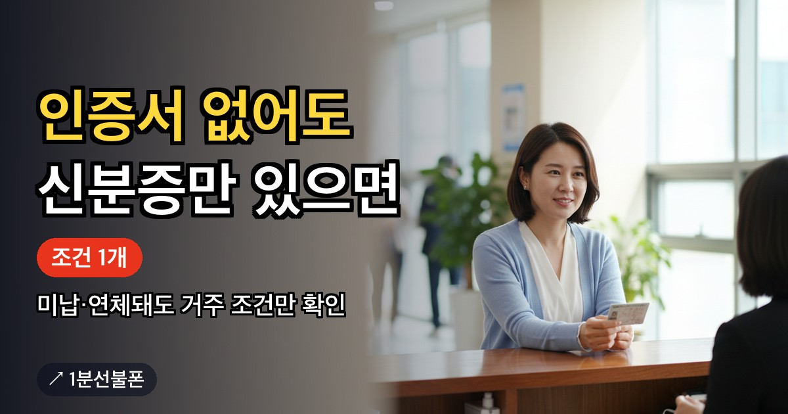

선불폰 개통 조건은 딱 하나, 대한민국에 거주하고 있다는 것뿐입니다. 미납·연체·신용불량 이력이 있어도 이 조건만 맞으면 개통할 수 있습니다. 다만 비대면 신청은 본인 명의 간편인증서가 있어야 하고, 없다면 신분증을 들고 센터를 방문해야 합니다.
- 선불폰 개통 조건은 대한민국 거주, 이 하나뿐
- 직업·소득·장애 여부는 조건에 없고, 미납·연체·신용불량도 가능
- 비대면은 본인 명의 간편인증서 필수, 없으면 센터 방문
- 센터 방문 준비물은 실물 신분증
- 외국인은 센터 방문으로만 개통
선불폰 개통 조건은 대한민국 거주, 이 하나뿐입니다
선불폰을 개통할 수 있는지 궁금하다면 확인할 조건은 하나입니다. 대한민국에 거주하고 있는지가 전부입니다. 직업 유무, 소득 수준, 장애 여부는 이 조건에 들어가지 않습니다. 그래서 무직자, 기초수급자, 장애가 있는 분도 거주 조건만 맞으면 개통 대상입니다.
후불 휴대폰과 달리 선불폰은 요금을 먼저 충전해 쓰는 방식이라 신용 조회 절차가 없습니다. 미납·연체·신용불량 이력이 있어도 개통 자체는 막히지 않습니다. 이 부분을 더 자세히 보고 싶다면 신용불량 휴대폰 개통 글을 참고하세요.
다만 외국인은 예외입니다. 여권으로는 비대면 신청이 되지 않아 외국인등록증이 있어도 센터 방문 개통으로 안내됩니다.
간편인증서가 있으면 비대면, 없으면 센터 방문
거주 조건을 충족했다면 다음은 어떤 방법으로 신청할지입니다. 비대면 신청의 전제는 본인 명의 간편인증서입니다. 토스·카카오 등으로 본인 확인을 하는 절차이며, 진행 방식에 따라 쓸 수 있는 인증서가 조금씩 다르니 신청 화면 안내를 확인하세요. '선불폰 공인인증서'로 검색해 오셨다면, 지금 필요한 건 공인인증서가 아니라 토스·카카오 등 간편인증서입니다.
본인 명의 간편인증서가 있다면 유심을 준비한 뒤 개통 방법 안내를 따라 신청할 수 있습니다. 간편인증서가 없거나 본인 명의로 만들 수 없는 상황이라면 비대면 신청 자체가 어려워 센터 방문 개통으로 넘어가야 합니다.
센터 방문에 필요한 준비물은 실물 신분증
센터 방문 개통의 준비물은 실물 신분증입니다. 센터 방문은 예약이 먼저입니다. 상담으로 시간·장소를 예약하면 방문 안내를 받고, 당일 실물 신분증을 들고 가면 개통 후 충전까지 도와줍니다. 센터 찾기나 지역별 센터에서 가까운 곳을 확인한 뒤 방문 가능 여부를 문의하세요.
임시신분증이나 모바일 신분증으로도 가능한지 묻는 경우가 많은데, 이 부분은 예약 상담 때 확인하는 것이 정확합니다. 신청 방법별로 준비물을 정리하면 다음과 같습니다.
| 구분 | 핵심 조건 | 준비물 |
|---|---|---|
| 비대면 신청 | 본인 명의 간편인증서 | 유심 + 본인 명의 간편인증서(토스·카카오 등) |
| 센터 방문 | 간편인증서 유무 무관 | 실물 신분증 |
유심은 편의점에서 사고, 개통은 별개 절차입니다
'선불유심 신분증'으로 검색해서 오셨다면 헷갈리는 지점을 짚어드리겠습니다. 유심은 편의점에서 물건처럼 살 수 있고, 회선을 여는 개통은 그다음 단계입니다.
통신망에 따라 판매처와 상품이 다릅니다. KT망은 CU·GS25·이마트24에서 민트색 포장의 바로유심을, LG망은 이마트24·B마트·지하철 역 자판기에서 검은색 포장의 모두의원칩을 판매합니다. 가격은 6,600~8,800원입니다. 어떤 유심을 사야 할지 헷갈린다면 유심 준비 안내를 먼저 확인하세요.
조건을 갖췄다면 이후 절차는 얼마나 걸릴까
거주 조건과 인증 수단(간편인증서 또는 신분증)을 갖췄다면 남은 절차는 길지 않습니다. 유심을 들고 있는 상태라면 개통까지 5분이면 끝납니다. 요금제는 월 12,100원부터 시작하며, 이 가격대는 본인인증 용도로 많이 선택합니다. 요금제 전체는 선불폰 요금제에서 확인할 수 있습니다.
비대면 신청은 안면인증과 본인인증, 두 가지 확인 절차를 거칩니다. 2026년 10월부터는 안면인증을 반드시 통과해야 개통할 수 있습니다. 통과율을 높이려면 형광등 빛이 얼굴에 반사되지 않는 위치에서 진행하고, 고개를 돌리라는 안내가 나오면 시선도 고개와 함께 움직이세요.
개통 이후에는 확인 전화, 이른바 해피콜이 옵니다. 이 전화를 받지 못하면 번호가 해지될 수 있으니 개통 직후에는 모르는 번호도 받을 수 있게 해두는 것이 좋습니다.
신청 전에 조건부터 다시 확인하세요
정리하면 비대면과 방문 중 어느 쪽으로 진행할지는 본인 명의 간편인증서가 있는지로 갈립니다. 미납·연체·신용불량, 무직 상태, 장애 여부는 조건을 가로막지 않습니다. 기초수급자인 경우 통신 요금 감면이 선불폰에도 적용되는지는 신청 화면 안내나 상담으로 확인하는 것을 권합니다.
준비물을 다시 확인하고 싶다면 개통 방법 자세히 보기에서 온라인·방문 두 갈래를 한 번 더 비교해보세요. 가장 저렴한 조합을 찾는다면 가장 저렴한 선불폰 글도 참고할 만합니다.
자주 묻는 질문
장애가 있어도 선불폰을 개통할 수 있나요?
네. 선불폰 개통 조건은 대한민국 거주 하나뿐이라 장애 여부는 조건에 들어가지 않습니다. 매장 방문이 어렵다면 본인 명의 간편인증서로 비대면 신청을 먼저 확인해보세요.
기초수급자도 선불폰을 개통할 수 있나요?
네, 개통 자격 자체는 동일하게 거주 조건 하나입니다. 다만 통신 요금 감면이 선불폰에도 적용되는지는 신청 화면 안내나 상담을 통해 직접 확인하는 것이 정확합니다.
직업이 없는 무직자도 개통되나요?
가능합니다. 소득이나 직업 유무는 개통 조건에 포함되지 않고, 대한민국 거주 여부만 확인합니다.
신분증이 없거나 임시신분증만 있으면 어떻게 하나요?
비대면 신청은 본인 명의 간편인증서로 본인 확인을 하고 안면인증을 거칩니다. 신분증이 추가로 필요한지는 신청 화면 안내를 확인하세요. 센터 방문은 실물 신분증이 기본이며, 임시신분증·모바일 신분증 인정 여부는 예약 상담 때 확인하세요. 실물 신분증이 없다면 재발급 후 방문하거나, 본인 명의 간편인증서가 있는지 먼저 확인해 보세요. 어느 쪽도 어렵다면 상담으로 안내받으세요.
간편인증서가 없으면 아예 개통할 수 없나요?
비대면 신청은 어렵지만 방법이 없는 건 아닙니다. 신분증을 지참해 센터를 방문하면 간편인증서 없이도 개통할 수 있습니다.
같이 보면 좋은 글

미납 선불폰, 연체·신용불량이어도 개통되는 이유
통신비를 못 내 번호가 정지됐거나 새 개통이 막힌 상태라면 선불폰을 확인해보세요. 선불폰은 요금을 먼저…

신용불량 휴대폰 개통, 선불폰이면 가능합니다
신용불량 이력 때문에 휴대폰 개통이 막혔다면 선불폰을 확인해 보세요. 선불폰은 요금을 먼저 충전해 쓰는…

가장 저렴한 선불폰, 첫 달 실제 비용은 얼마일까요
선불폰 중 가장 저렴한 조합을 찾는다면 유심비와 요금제를 함께 봐야 합니다. 편의점 유심은…

세컨폰 개통, 공기계와 유심이면 충분합니다
중고거래·구직·서비스 인증처럼 개인 번호와 분리해서 쓸 두 번째 번호가 필요하다면, 약정 없는 선불폰으로…